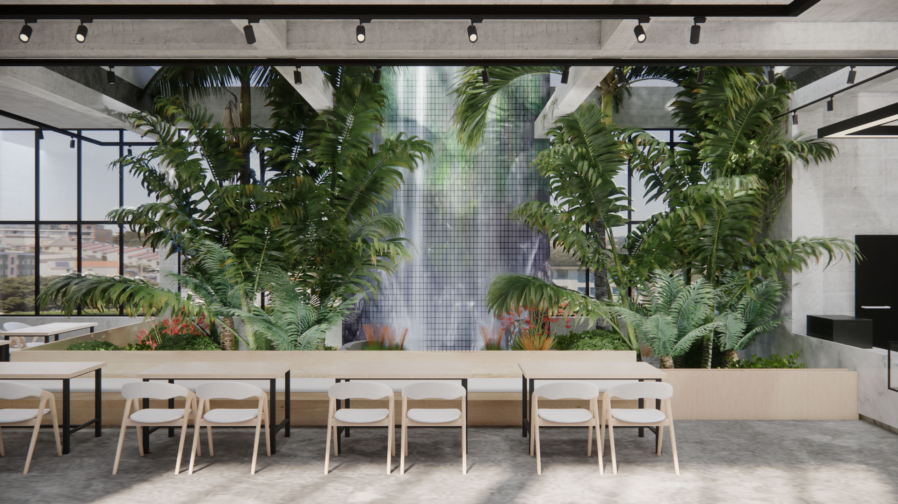

Interior Design
졸업전시 아이덴티티 & 도록 디자인
제OO회 실내디자인학과 졸업전시회 메인 그래픽 및 홍보물 편집 총괄 (2025)

Interior Design
주거 공간 리모델링 프로젝트
사용자의 라이프스타일을 반영한 30평대 아파트 공간 기획 및 설계 (2024)

Editorial Design
졸업전시 도록 내지 디자인
협성대학교 제 28회 실내디자인학과 졸업전시회 편집팀 (2025)